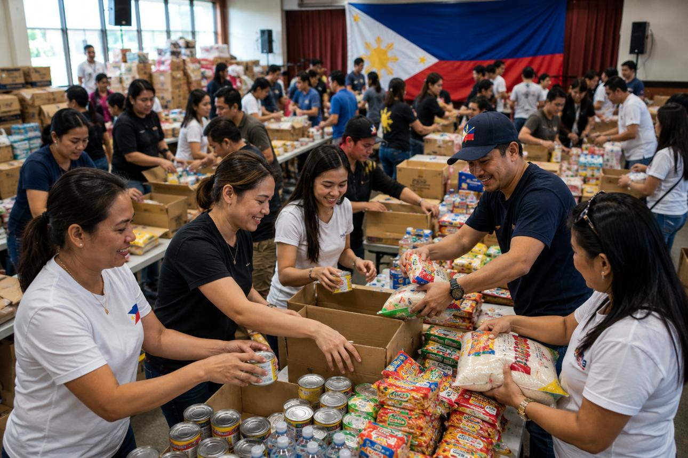
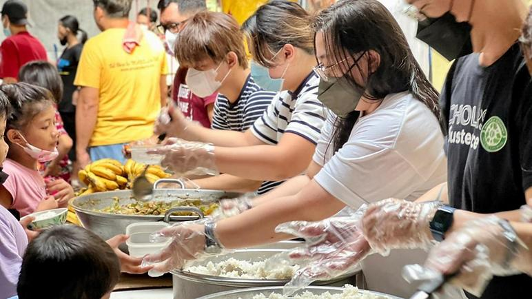
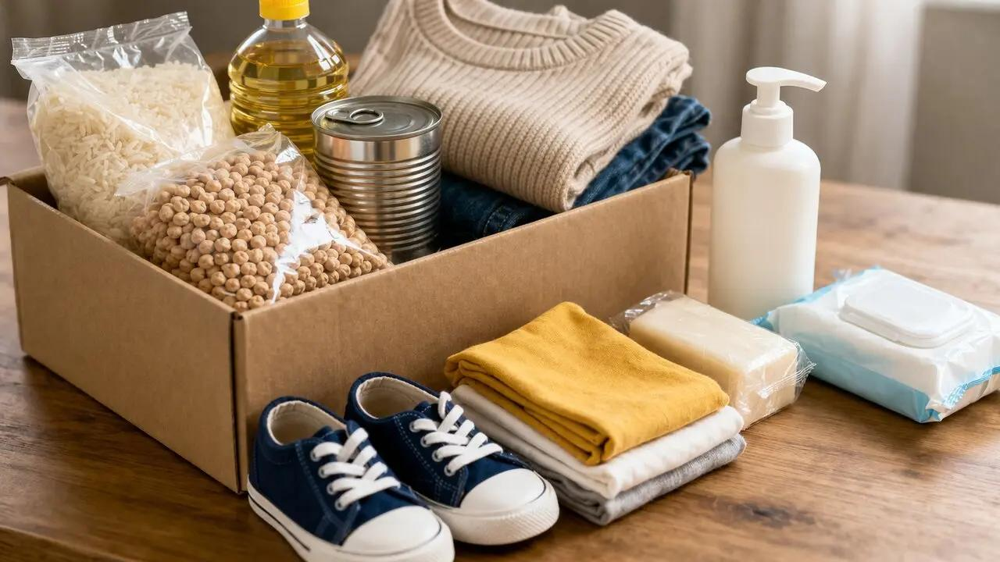
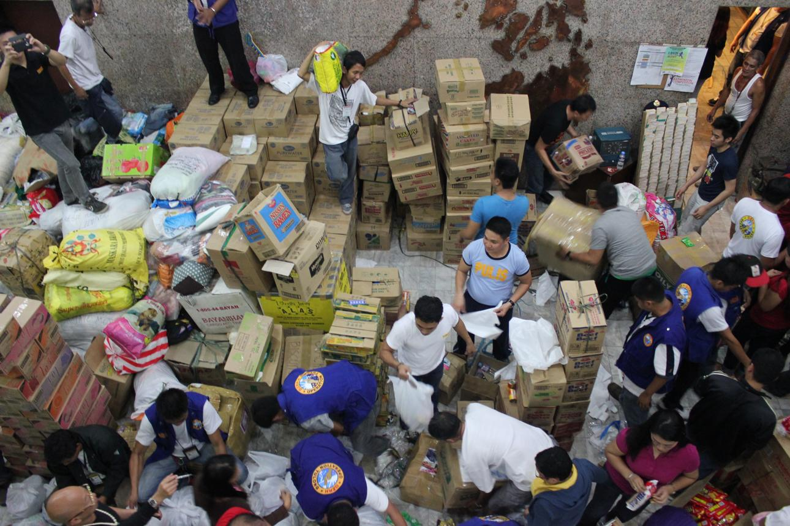

Your guide to collaborating with and supporting Jesus on the Go in Metro Manila.

One simple connection can help bring essential goods and support to communities in need.

One Tap One Life is a digital portal created to connect compassionate donors and volunteers with Jesus on the Go, a community-driven outreach organization based in Parañaque.
Through feeding and donation programs around Metro Manila, we make it easier for people to discover ways to support, contact, and deliver donations to the organization.
Connect with us →Every contribution matters. Here are simple ways to support the outreach.

Gather food, clothing, and other essentials that you would like to share.
Contact Jesus on the Go to confirm donation arrangements and delivery instructions.

Volunteer, collaborate, or help spread the word about community outreach programs.
Whether you're an individual, student group, organization, or business, you can help support the mission of Jesus on the Go.
Reach out to explore donation opportunities, volunteer participation, or possible collaborations.
Explore CollaborationHave questions about donations, volunteering, or collaboration? Get in touch with Jesus on the Go.
Parañaque, Metro Manila, Philippines
For donation arrangements and outreach inquiries, please contact the organization through its official channels.
Visit Official Facebook PagePlease verify the official contact details before publishing.